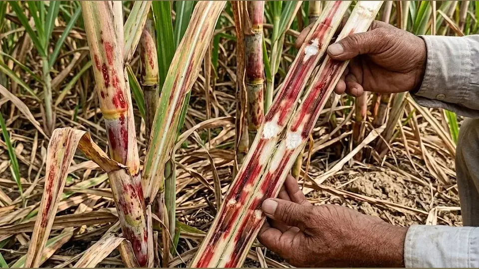

उत्तर प्रदेश की शान गन्ना

भूमिका
गन्ना भारत की सबसे महत्वपूर्ण नकदी फसलों में से एक है। उत्तर प्रदेश, महाराष्ट्र, कर्नाटक और पंजाब जैसे राज्यों में लाखों किसान गन्ने की खेती पर निर्भर हैं। लेकिन हर साल गन्ने में लाल सड़न रोग के कारण किसानों को भारी नुकसान उठाना पड़ता है।
यह रोग इतना खतरनाक है कि अगर समय पर पहचान और उपचार न किया जाए, तो पूरी फसल बर्बाद हो सकती है। इस लेख में हम आपको Sugarcane Red Rot Disease की पूरी जानकारी देंगे — सरल हिंदी में, जो हर किसान आसानी से समझ सके।
गन्ने में लाल सड़न रोग क्या है?
लाल सड़न रोग (Red Rot Disease) गन्ने की सबसे विनाशकारी गन्ने की बीमारी मानी जाती है। इसे गन्ने का "कैंसर" भी कहते हैं। यह रोग Colletotrichum falcatum नामक फफूंद (Fungus) से होता है।
इस रोग में गन्ने का अंदरूनी भाग लाल रंग का हो जाता है और उसमें से शराब जैसी तेज गंध आने लगती है। बाहर से गन्ना ठीक दिखता है लेकिन अंदर से पूरी तरह सड़ा हुआ होता है।

रोग के कारण
गन्ना रोग नियंत्रण के लिए सबसे पहले यह समझना जरूरी है कि यह रोग क्यों होता है:
- फफूंद का संक्रमण: Colletotrichum falcatum फफूंद मिट्टी और संक्रमित बीजों में छिपी रहती है।
- संक्रमित बीज का उपयोग: रोगग्रस्त गन्ने के टुकड़ों को बीज के रूप में लगाने से यह रोग तेजी से फैलता है।
- अधिक नमी और बारिश: जुलाई से सितंबर के बीच अधिक वर्षा में यह फफूंद तेजी से पनपती है।
- खराब जल निकासी: खेत में पानी का रुकना इस रोग को बढ़ावा देता है।
- एक ही किस्म की बार-बार बुआई: संवेदनशील किस्में बार-बार लगाने से जमीन में फफूंद बढ़ती है।
- कीटों से फैलाव: दीमक और अन्य कीड़े गन्ने में घाव बनाते हैं, जिनसे फफूंद अंदर प्रवेश करती है।
पहचान और लक्षण — कैसे जानें कि रोग लग गया है?
🍃 पत्तियों पर लक्षण
- पत्तियाँ पीली पड़ने लगती हैं, खासकर बीच की पत्तियाँ पहले सूखती हैं।
- पत्तियों का सिरा सूखकर नीचे की तरफ झुकने लगता है।
- पौधा कमजोर और बेजान दिखने लगता है।
🌿 तने पर लक्षण
- गन्ने को बीच से काटने पर अंदर लाल और सफेद धारियाँ दिखती हैं।
- अंदर से खट्टी या शराब जैसी गंध आती है।
- गन्ने का गूदा खोखला और काला पड़ने लगता है।
🌱 जड़ों पर लक्षण
- जड़ें काली और सड़ी हुई दिखती हैं।
- पौधा जमीन से आसानी से उखड़ जाता है।

रोग कैसे फैलता है?
- सिंचाई का पानी: संक्रमित खेत का पानी पड़ोसी खेत में जाने से।
- कृषि औजार: एक खेत में इस्तेमाल किए औजार बिना साफ किए दूसरे में।
- हवा और बारिश: फफूंद के बीजाणु हवा के साथ उड़कर फैलते हैं।
- संक्रमित बीज गन्ना: यही सबसे बड़ा और मुख्य कारण है।
- कीड़े और टिड्डे: जो एक पौधे से दूसरे पर जाते हैं।
नुकसान — कितना खतरनाक है यह रोग?

| पहचान बिंदु | ✅ स्वस्थ गन्ना | ❌ रोगग्रस्त गन्ना |
|---|---|---|
| पत्तियों का रंग | गहरा हरा, चमकदार | पीला, सूखा, झुका हुआ |
| तने का रंग (अंदर) | सफेद और रसदार | लाल-भूरा, धारियों वाला |
| गंध | मीठी, प्राकृतिक | खट्टी, शराब जैसी |
| रस की मात्रा | भरपूर और मीठा | कम और खट्टा |
| जड़ों की स्थिति | मजबूत, सफेद | काली, सड़ी हुई |
| चीनी की मात्रा | सामान्य (12–15%) | बहुत कम (5% से नीचे) |
| उपज | अच्छी, बाजार योग्य | कम, मिल अस्वीकार करती है |
रोकथाम के उपाय
- रोग-प्रतिरोधी किस्में चुनें: Co-0238, CoJ-64, Co-86032।
- स्वस्थ बीज चुनें: प्रमाणित और रोगमुक्त गन्ने के टुकड़े लगाएं।
- फसल चक्र अपनाएं: हर 2-3 साल में गन्ने की जगह दूसरी फसल लगाएं।
- जल निकासी सुधारें: खेत में पानी न रुके, नालियाँ बनाएं।
- संक्रमित पौधे हटाएं: रोगग्रस्त पौधों को निकालकर जला दें।
- औजार साफ रखें: काम के बाद कीटाणुनाशक से धोएं।
जैविक नियंत्रण
- ट्राइकोडर्मा विरिडी: 4 ग्राम प्रति लीटर पानी में बीज डुबोएं।
- स्यूडोमोनास फ्लोरेसेंस: बीज उपचार और मिट्टी में मिलाएं।
- नीम की खली: खेत में मिलाने से फफूंद की वृद्धि रुकती है।
- गोमूत्र का छिड़काव: 10% घोल बनाकर पत्तियों पर छिड़काव करें।
रासायनिक नियंत्रण
| दवाई का नाम | मात्रा | तरीका |
|---|---|---|
| कार्बेंडाजिम 50% WP | 1 ग्राम/लीटर | पत्तियों पर छिड़काव |
| थायोफिनेट मिथाइल | 2 ग्राम/लीटर | छिड़काव |
| मैंकोजेब 75% WP | 2.5 ग्राम/लीटर | 15 दिन के अंतर पर |
| कॉपर ऑक्सीक्लोराइड | 3 ग्राम/लीटर | छिड़काव |
बीज उपचार

- गर्म पानी उपचार: 52°C पानी में 30 मिनट डुबोएं।
- कार्बेंडाजिम घोल: 1 ग्राम प्रति लीटर में 10-15 मिनट।
- ट्राइकोडर्मा उपचार: 4 ग्राम प्रति लीटर में डुबोएं।
खेत प्रबंधन
- फसल कटाई के बाद: बचा हुआ हिस्सा खेत से बाहर निकालें।
- गहरी जुताई करें: मिट्टी में छिपी फफूंद धूप से नष्ट होगी।
- संतुलित खाद डालें: नाइट्रोजन कम, पोटाश-फास्फोरस का संतुलन।
- पेड़ी फसल की सावधानी: संक्रमण था तो पेड़ी न लें।
- सिंचाई नियंत्रण: खेत में नमी का संतुलन बनाए रखें।
विशेषज्ञ सलाह
- जुलाई-अगस्त में नियमित जाँच करें — यह रोग के लिए अनुकूल समय है।
- पहले लक्षण दिखते ही तुरंत उपचार शुरू करें।
- हर 3 साल में गन्ने की किस्म बदलें।
- नजदीकी KVK से मुफ्त सलाह और मिट्टी जाँच करवाएं।
- किसान कॉल सेंटर: +91 9870951001 — निःशुल्क।
निष्कर्ष
लाल सड़न रोग गंभीर चुनौती है, लेकिन सही जानकारी से इसे नियंत्रित किया जा सकता है। रोग-प्रतिरोधी किस्म चुनें, बीज उपचार करें और खेत की नियमित निगरानी करें।
एक सतर्क किसान ही सफल किसान होता है।
अक्सर पूछे जाने वाले सवाल
KrashiMitra.in — आपका विश्वसनीय कृषि साथी
मंडी भाव, सरकारी योजनाएं, बीज-खाद की जानकारी और फसल रोग उपचार — सब कुछ हिंदी में।
KrashiMitra.in पर जाएं →